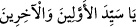

“ (Ey öncekilerin ve sonrakilerin efendisi)” demek oluyor. “Ben
Âdemoğullarının efendisiyim”[99] hadisi de bu harfin tefsiridir. Nitekim el-Arâis’te
şöyle der: “Hz. Peygamber (a.s.) bu sözüyle kendisini övmemiş, ancak Hak Teâlâ’nın
‘Yâsîn’ buyurarak kendisine hitab etmesinin mânâsını haber vermiştir.”
Ayrıca bilmek gerekir ki harfler arasında “sîn”, yazılış ve telâffuz itibariyle uygunluk
ve eşitlik sahibi tek harftir, bunun dışında hiçbir harfte bu durum söz konusu değildir. Bu
sebeple ister tevhid yolunda ister şerîatin ahkâmında olsun, hakîkî adâletin kendisine
mahsus olduğu Hazret-i Peygamber’e mahsustur.
Her hâl u kârda itidal mertebesi sana mahsustur.
Tevhid faziletine sahip olmakta herkesten daha âdil olan sensin.
Cem’ü’l-cem’ makamında temkindesin sen.
Böyle bir fazilete sahip olmakla herkesten daha yücesin.
Anlatılan kelime ve sözlerden çıkan mânâya göre bahçelerin kokusu, Kur’an’ın kalbi
olan Yasîn ile koklanabilir.
Nimetullah Nakşibendî (Yâsîn harflerinin mânâsı hakkında) der ki: “Ey yakîn
denizinin pınarının hakîkatini bilen, sapma ve telvînden sâlim olarak onda yüzen!”
Şeyh Necmeddîn şöyle demiştir: “Yâsîn, Habîbin peygamberliğinin bereketine
(yümn) ve O’nun temiz sırrına yemindir.”
İnşaallah bu konunun tamamı sûrenin sonunda gelecektir.
Baklî der ki: “Allah Teâlâ ezelî kudret eline (yed) ve rubûbiyyetin yüceliğine (senâ)
yemîn etmiştir.”
Kuşeyrî der ki: “Yâ” harfi misak gününe, “sîn” Allah Teâlâ’nın dostlarıyla olan
sırrına işaret etmektedir. Sanki Allah Teâlâ: ‘Misak günü, benim dostlarla olan sırrım
ve Kur’an hakkı için/bunlara yemin olsun ki…’ buyurmuştur.”
Ulemâdan bir topluluk Allah Teâlâ’nın hiç kimseye bazı sûrelerin başlarında olan
hurûf-i mukattaanın mânâlarını idrâke imkan vermediği görüşüne varmış ve “Bunların
ilmi sadece Allah’a âiddir. Biz bunların Kur’ân-ı Azîm cümlesinden olduğuna îman
ederiz. Bunların ilmini Allah Teâlâ’ya havâle ederiz. Diğer âyetlerden anladığımız
mânâları bunlardan anlamasak da ibâdet maksadıyla, Allah’ın emrini yerine getirmek ve
O’nun kelâmını ta’zim için bu harfleri okuruz.” demişlerdir.
Yenâbî’de şöyle geçer: “Hurûf-i mukattaa’dan her bir harfin gayb hazinesinden bir
sırrı vardır ki Hazret-i Hak Teâlâ habibine bunu bildirmiştir. Ondan sonra Cebrâil onun
üzerine nâzil olmuş; Allah ve Rasûlü’nden başka kimse ondan haberdar değildir.”
Şeyh Nûreddinzâde Vâridât’ında şöyle der: “Rasûlullah (s.a.)’e böyle müteşâbih
harflerin esrârını sordum. “Onlar benimle Allah Teâlâ arasındaki muhabbetin
sırlarındandır.” buyurdu. Ben: “Bunları kimse bilir mi?” diye sordum. “Bunları ceddim
İbrâhim (a.s.) dahi bilmez. Bunlar hiçbir mürsel nebî ve mukarreb meleğin bile muttali